Práctica 4: Convolución y Correlación de señales en tiempo continuo
Contents
Simulación númerica de convolución
El siguiente código es una modificación del que se encuentra en Lathi (Código del capítulo 2, M2.4 pág 161), ejemplo de convoluciones continuas. Para la implementación númerica es importante tener encuenta la duración de cada señal, recuerde que es imposible hacer simulaciones númericas que involucren cantidades infinitas. Si una señal tiene duración 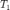 y otra señal 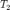 la convolución tendrá duración 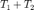.

Por ejemplo si queremos realizar la convolución de las siguientes señales señales la señal resultante tendrá longitud de 3.5.
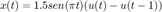

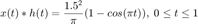
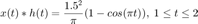
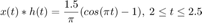
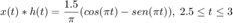
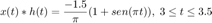
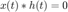 en otro caso.
t1=0:0.01:1; t2=1:0.01:2; t3=2:0.01:2.5; t4=2.5:0.01:3; t5=3:0.01:3.5; figure plot(t1,(1.5^2/pi)*(1-cos(pi*t1))) hold on plot(t2,(1.5^2/pi)*(1-cos(pi*t2))) plot(t3,(1.5/pi)*(cos(pi*t3)-1)) plot(t4,(1.5/pi)*(cos(pi*t4)-sin(pi*t4))) plot(t5, (-1.5/pi)*(1+sin(pi*t5))) grid on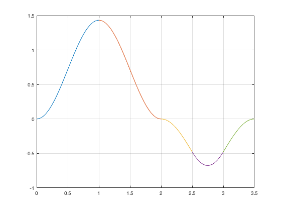
function convconm(x,h) figure (1) % Se crea una figura para hacer las gráficas dtau = 0.005; % Base de los rectangulos para realizar la integral tau = -1:dtau:4; % Intervalo de visualización del resultado ti = 0; % Indice para el vector de resultados tvec = -.25:.1:3.75; % traslaciones de t, cuantas integrales se calulan y = NaN*zeros(1, length (tvec)); % Resultados de acuerdo a cuantos t for t = tvec, % Cantidad de traslaciones ti = ti+1; % Indice para guardar el resultado (indice del tiempo) xh = x(t-tau).*h(tau); % resultado de la multiplicación lxh = length(xh); % longitud del resultado y(ti) = sum(xh.*dtau); % Base por altura, aproximación de la integral subplot (2,1,1), % gráfica de 2 x 1 (primera) plot(tau, h(tau), 'r-', tau, x(t-tau), 'g--', t, 0, 'ob'); %graficas axis ([tau(1) tau(end) -2.0 2.5]); % límites de los ejes patch([tau(1:end-1); tau(1:end-1); tau(2:end); tau(2:end)],... [zeros(1,lxh-1);xh(1:end-1);xh(2:end);zeros(1,lxh-1)],... [.8 .8 .8], 'edgecolor', 'none'); xlabel('\tau'); % Texto del eje X legend('h(\tau)', 'x(t-\tau)','t','h(\tau)x(t-\tau)')% Caja de Texto subplot (2, 1, 2) % gráfica de 2 x 1 (segunda) plot (tvec, y, 'k', tvec (ti), y(ti), 'ok'); xlabel ('t'); ylabel ('y(t) = \int h(\tau)x(t-\tau) d\tau'); axis ([tau(1) tau(end) -1.0 2.0]); % límites del eje grid; % malla drawnow; % efecto de movimiento continuo end end
Si ejecutamos las sigueintes instrucciones en el Command Window y el directorio de trabajo es el mismo donde se encuentra la función convconm tendrémos el siguiente resultado
x = inline('1.5*sin(pi*t).*(t>=0 & t<1)'); h = inline('1.5*(t>=0&t<1.0) - (t>=2&t<2.5)'); convconm(x,h)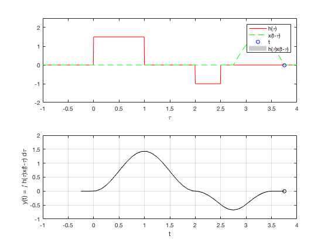
El cual puede compararse con la gráfica del resultado análitico y observar que la solución númerica es una buena aproximación de la exacta.
Correlación númerica
Una manera de abordar este problema es recordando una equivalencia de la correlación
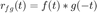
Entonces por ejemplo si se quisiera realizar la correlación de las señales
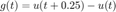
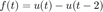
El código de convolución podría ocuparse de la siguiente manera
g = inline('(t>=0 & t<0.25)'); f = inline('(t>=0&t<2)'); convconm(g,f)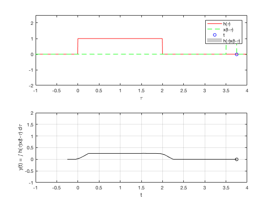
Entregables
Se revisa una publicación (html) de la práctica
- (10 puntos) Este punto es clave para que se facilite tu trabajo, aunque podrás realizar el resto de los entregables aún cuando este punto no lo realices. Tienes que agregar a la función convconm los párametros necesarios de entrada para que las convoluciones se muestren de manera correcta en su intervalo de definición, es decir, la programación actual solo muestra una buena visualización de la simulación cuando las funciones están definidas en intervalos parecidos al ejemplo mostrado, tendrás que hacer cambios para que la función tenga un uso más general, esto reducira el trabajo de los sigueintes puntos a solo llamadas de esta modificación, de lo contrario tendrías que entregar varias modificaciones al ejemplo comentado
- (25 puntos) Realiza la convolución númerica indicada en el siguiente, enlace compara con el resultado analitico de este PR.
- (25 puntos) Realiza la convolución númerica indicada en el ejercicio 1 del siguiente, enlace compara con el resultado analitico de este PR.
- (10 puntos) Realiza la correlación númerica indicada en el ejercicio k) del siguiente, enlace compara con el resultado analitico de este PR.
- (10 puntos) Realiza la correlación númerica indicada en el ejercicio l) del siguiente enlace compara con el resultado analitico de este PR.
- (10 puntos) Realiza la correlación númerica indicada en el ejercicio m) del siguiente enlace compara con el resultado analitico de este PR.
- (10 puntos) Realiza la correlación númerica indicada en el ejercicio n) del siguiente enlace compara con el resultado analitico de este PR.
El código de esta publicación lo puedes encontrar en el siguiente enlace